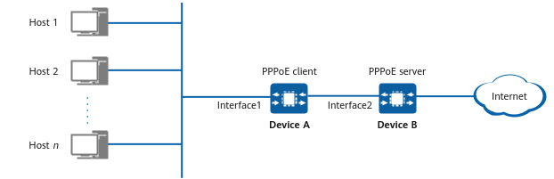

Example for Configuring the Device as an IPv6 PPPoE Client
Networking Requirements
In Figure 1, Device A functioning as a PPPoE client connects to hosts on the LAN using interface1 and connects to a PPPoE server using interface2.
The hosts need to share an account. During connection establishment, if the account is authenticated successfully on the PPPoE server, a PPPoE session is established.
Service requirements are as follows:
- After CHAP or PAP authentication succeeds, Device A (PPPoE client) establishes a connection with Device B (PPPoE server).
- After the connection is disconnected, the device attempts to re-establish a dial-up connection at intervals.

In the figure, interface1 and interface2 represent 10GE0/0/1 and 10GE0/0/2, respectively.

Configuration Roadmap
- Configure CHAP or PAP authentication on the dialer interface so that the device can establish a connection with the PPPoE server through PPP authentication.
- Set the dial-up mode to auto dial-up so that the device will attempt to re-establish a dial-up connection at intervals after a disconnection.
Procedure
- Configure the PPPoE server.
Configure the authentication mode and IP address allocation mode or IP addresses or address pools assignable to PPPoE clients on the PPPoE server. The device cannot be configured as a PPPoE server. The PPPoE server configuration varies according to the device. For details, see the relevant documentation.
- Configure a dialer interface and the authentication mode of the interface.
If the authentication mode of the PPPoE server is CHAP, configure CHAP authentication on the interface. If the authentication mode of the PPPoE server is PAP, configure PAP authentication on the interface. If the authentication mode of the PPPoE server is unknown, configure both CHAP and PAP authentication on the interface. This example assumes that the authentication mode of the PPPoE server is unknown.
<HUAWEI> system-view [HUAWEI] sysname DeviceA [DeviceA] interface dialer 1 [DeviceA-Dialer1] link-protocol ppp [DeviceA-Dialer1] ppp chap user user1@system [DeviceA-Dialer1] ppp chap password cipher YsHsjx_202206 [DeviceA-Dialer1] ppp pap local-user user1@system password cipher YsHsjx_202206 [DeviceA-Dialer1] ipv6 enable [DeviceA-Dialer1] ipv6 address auto link-local [DeviceA-Dialer1] ipv6 address auto global [DeviceA-Dialer1] quit
- Bind the physical interface 10GE0/0/2 to the configured dialer interface and establish a PPPoE session.
[DeviceA] interface 10GE 0/0/2 [DeviceA-10GE0/0/2] pppoe-client dialer 1 bundle-number 1 [DeviceA-10GE0/0/2] quit
- Configure a static route destined for the PPPoE server.
[DeviceA] ipv6 route-static :: 0 dialer 1 [DeviceA] quit
Verifying the Configuration
# Run the display pppoe-client session summary command to check PPPoE sessions and statistics on a PPPoE client. The command output shows that the session status is UP, indicating that the session is normal.
<DeviceA> display pppoe-client session summary ----------------------------------------------------------------------------------------- PPPoE Client Session(summary): ID Dialer Bundle Intf Client-MAC Server-MAC State AC-Name 1 1 1 10GE0/0/2 00e0-fc03-0201 00e0-fccd-0680 UP DUALFW_V500e0fc030203 --------------------------------------------------------------------------------
Configuration Scripts
DeviceA
#
sysname DeviceA
#
interface Dialer 1
link-protocol ppp
ppp chap user user1@system
ppp chap password cipher $1d$OwseVRh@LH}ZeTBm$1nH4$ab>d(N{-%0!ab48y=Ic*xEUR4pVhR2"9-~,$
ppp pap local-user user1@system password cipher $1d$OwseVRh@LH}ZeTBm$1nH4$ab>d(N{-%0!ab48y=Ic*xEUR4pVhR2"9-~,$
ipv6 enable
ipv6 address auto link-local
ipv6 address auto global
#
interface 10GE 0/0/2
pppoe-client dialer 1 bundle-number 1
#
ipv6 route-static :: 0 dialer 1
#
return